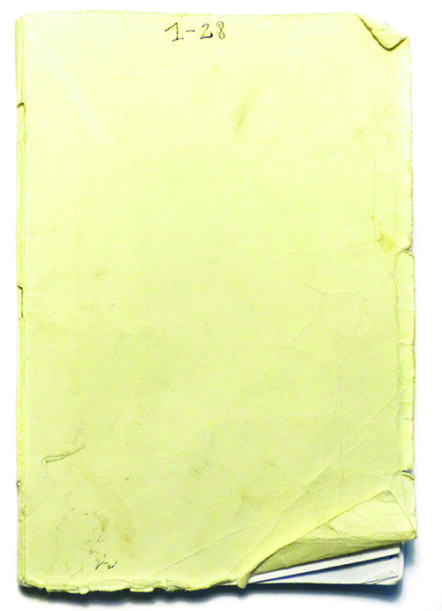

Neben meinem Wecker liegt ein Aufnahmegerät. Klingelt der Wecker, nehme ich die ersten ein oder zwei Worte auf, die mir in den Sinn kommen. Sie beschreiben die Szenerie des letzten Traumbildes. Selten kann ich mich nach dem Aufstehen noch an das Wort erinnern. Höre ich mir später die Aufnahme an, lässt diese als Link das Traumbild vor meinem inneren Auge wieder erscheinen. Eine eingefrorene Szene tut sich vor mir auf. Ich zeichne dieses Bild in ein Heft: die abstrahierte Zeichnung des Aufwachmomentes.
Ich setzte damit einen Akzent zwischen zwei Episoden: Der Übergang zwischen Schlafen und Wachen wird überwunden, indem seine Flüchtigkeit in dem Paar aus Wort und Zeichnung reproduzierbar wird.
Aufwachmoment ist materialisiert und verfestigt
Aufwachmoment bildet ein Paar der Verschlüsselung aus Wort und Bild
Aufwachmoment ist der Link zu einem vergangenen Augenblick
In dem kurzen Aha Moment wird Zeit intensiver erlebt als sonst. Sie scheint gebündelt und konzentriert zu sein, auf ein Ziel hin ausgerichtet: Erkenntnis resultiert aus dem, was man eigentlich schon längst hätte wissen können. Plötzlich taucht das, was in einem geschlummert hat, auf und schießt wie ein Pfeil ins Bewusstsein: Es verbinden sich eigentlich bekannte Puzzlesteine zu einem neuen Ganzen.
Zeit vergehen lassen – zulassen nichts zu tun – Entspannung – plötzlich entsteht wie aus dem Nichts heraus Erkenntnis. Der Geist wird frei, Verbindungen finden sich, Assoziationsketten fügen sich zusammen
Man kann einen Aha Moment nicht planen oder veranlassen. Wenn er auftaucht, so scheint es, als ob die Zeit für einen Moment stehen bleibt, als müsse man kurz die Luft anhalten, um den Moment zu bewahren, der jedoch wie in Zeitlupe an einem vorbei schreitet – das Gefühl der Überwindung von Zeit.
Assoziationen zu jedem einzelnen Aha Moment sowie ein im Nachhinein vergebener Titel erweitern das Neue, das entstanden ist.
In Alltagsprophezeiung sammelte ich eigene Notizzettel und übertrug sie in Radierungen. Die Radierungen stellen überdauernde Kopien spontaner Planungen und Ideen dar. So fixieren sie im Nachhinein das in der Vergangenheit einmal geplante Zukünftige. Ich kopierte die Radierung ein weiteres Mal und erschuf Zwillingsnotizen.
28tagebuch-Manifest
Telefonzeit
ist der einzige Block, neben dem auf meinem Zettel etwas steht – ich muss also das tun, was auf dem Zettel steht, sollte es nicht zu einem Telefonat kommen
Produzieren
Ergebnisorientiertes Arbeiten – kann arbeiten an Zwillingsnotizzetteln oder ähnliches sein, kann aber auch Schreiben sein
Lesen
Zwischendurch dürfen Zitate abgetippt werden und Verständnisfragen / Zusammenhänge nachgeschlagen werden
Pause
Entspannung, kann kurze Verschnaufpause sein, kann länger sein
Schreiben
eine Stunde schreiben
Reflexion
über vorherigen Tag, und allgemein
Mails + Bürokratie
analoge und digitale Bürokratie, Post sowie Mails beantworten und schreiben
Müsli bzw. Frühstück
Impliziert auch Hundefutter und Hausarbeit etc.
